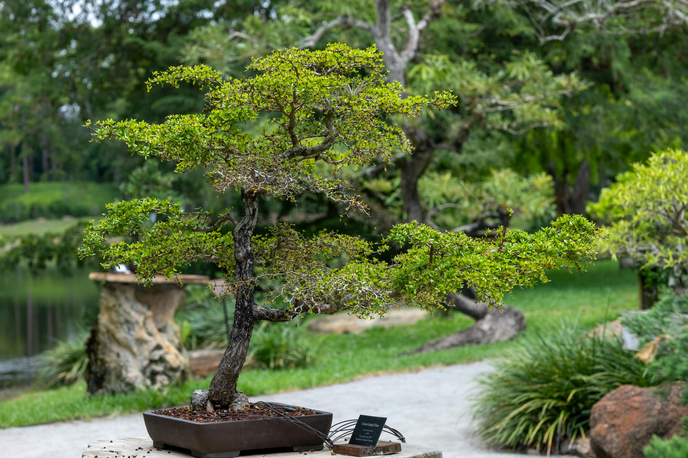

.png)
Como escolher o vaso ideal para seu Bonsai ou Begônia

Escolher o vaso correto para cada tipo de planta é essencial para seu bom desenvolvimento. Bonsais e begônias possuem necessidades específicas:
🌳 Para Bonsais:
- Vasos rasos: Bonsais precisam de vasos baixos para controlar o crescimento das raízes e manter a estética da miniatura.
- Drenagem eficiente: Escolha vasos com vários furos no fundo e use uma camada de pedras ou tela para evitar o acúmulo de água.
- Material: Cerâmica esmaltada é ideal para exposição; vasos de treino podem ser de plástico resistente.
🌺 Para Begônias:
- Vasos médios: Begônias preferem vasos com boa profundidade, que permitam espaço para raízes se expandirem.
- Drenagem moderada: Um ou dois furos são suficientes. Evite solo encharcado.
- Material: Vasos de barro ajudam a controlar a umidade; os de plástico mantêm o solo úmido por mais tempo.
Lembre-se: cada planta tem um estilo de crescimento único. Observar suas necessidades ajuda a escolher o vaso ideal e a manter sua saúde por mais tempo.
← Voltar